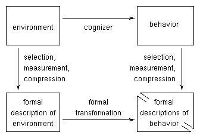

Homework 1: Introduction.
Due Thursday 23 January
30 points total

1. Framework for modeling. The diagram at right shows the general structure of formal modeling (discussed in class). In this exercise you are to explain how some of the models described by Anderson in Chapters 1 and 2 fit into this structure.
1A. (4 pts.) The Nernst equation. Consider the Nernst equation on page 22:
E = R * T * ln ( c1 / c2 )
This is a formal model relating the voltage difference, E, across a membrane to the difference of ionic concentrations, c1 and c2, on the two sides of the membrane.
1B. (4 pts.) The "cable" equations for neurons. Consider the voltage V at a point x on the neural membrane at time t. The "cable" equations for the voltage are
V(x) = V0 * exp( -x / lambda ) [p.29, and Fig. 1.16]
and
V(t) = 1 - exp( -t / tau ) [p.30, and Fig. 1.17]
1C. (4 pts.) The neural input-output function. On page 57 is given the formalization of neural input to output:
g = f( SUMi ai fi )
2. Familiarization with PDP software. This exercise is intended to familiarize you with the PDP software. Because many of the properties of the PDP software are introduced with the iac program, it will be our first exposure to the software, despite the fact that the iac architecture is more complicated than the single-layer feed-forward networks that will begin our systematic explorations.
2A. (5 pts.) Running the program. Work through Exercise 2.1, starting on page 38 of the PDP book, up to but not including question Q.2.1.1 (p. 43). Save the screen of at this point, and print it out (it should look something like Fig. 4, p. 44). Turn in your print out.
2B. (5 pts.) Logging and plotting results. Work through Appendix D of the PDP book (pp. 283-288). Make a graph like Figure 1, page 287, and turn it in.
3. "Essential Vector Operations". This exercise is intended to make sure you review Chapter 3 of Anderson.
3A. (2 pts.) Normalization. Normalize the vector (2,2).
3B. (3 pts.) Walsh functions. Figure out four orthogonal Walsh vectors for a four-dimensional space. Demonstrate that they are, in fact, orthogonal.
3C. (3 pts.) Linear dependence. Show that (2,2) is a linear combination of (1,0) and (0,1). Show that (2,2) is a linear combination of (1,1) and (1,-1). Show that (2,2) is a linear combination of (-1,2) and (2,-1). In other words, for each case, what linear combination of the vectors results in (2,2)?
Copyright © 1997 by John K. Kruschke